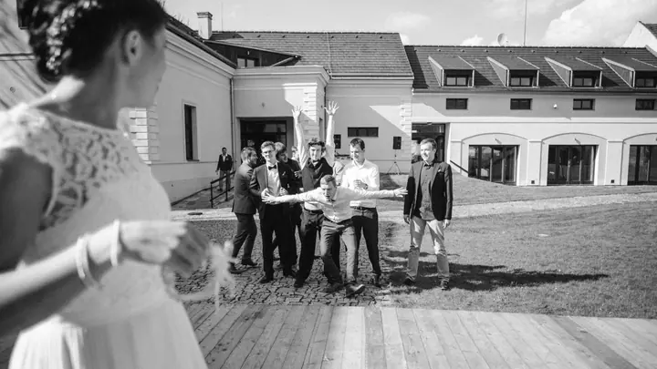

Lifestyle portréty
Portréty fotím v ulicích, v přírodě i v interiéru, kde se cítíte přirozeně. Místo i světlo vybíráme tak, aby fotky vyprávěly něco o vás.

Fotograf a filmař, portréty a svatby
Jmenuji se Petr Klempa a věnuji se lifestyle portrétům a svatební reportáži. Jsem z Prahy, ale fotím a točím po celé republice i v zahraničí. Ať držím foťák, nebo kameru, vždycky hledám příběh, který stojí za to vyprávět.
Zeptat se na termín
Portréty fotím v ulicích, v přírodě i v interiéru, kde se cítíte přirozeně. Místo i světlo vybíráme tak, aby fotky vyprávěly něco o vás.
Reportáž je moje další zaměření a specializuji se v ní na svatby. Celý den zachycuji nenápadně, od příprav přes obřad až po první tanec.
Jsem filmař a točím filmy pro značky. Stavím na filmovém vyprávění a hledám příběh, který stojí za to vyprávět.
Jsem filmař, fotograf a cestovatel na motorce. Moje práce se pohybuje někde mezi filmovým vyprávěním, objevováním obrazů a svobodou otevřené cesty.
Fotím lifestyle portréty, cestovatelskou a produktovou fotografii. Reportáž je moje další zaměření a v ní se specializuji na svatby. Pro značky natáčím filmy. Ať pracuji na čemkoli, hledám pořád totéž: příběh, který stojí za to vyprávět.
Motorky mě zavedou na místa, která bych jinak nejspíš nikdy neobjevil. Díky foťáku na ně nezapomenu ani po letech a můžu jimi inspirovat i ostatní. Z mých expedic, které možná znáte z YouTube, teď vznikají vlastní Adventure Route Books.

Napište mi přes formulář nebo zavolejte a popište, co máte v hlavě: portrét, svatbu, nebo projekt pro vaši značku.
Probereme místo, termín a atmosféru, kterou chcete. U svatby si projdeme průběh dne.
Na místě pracuji klidně a nenápadně. Hledám světlo, prostředí a chvíle, ze kterých vznikne příběh.
Vyberu nejlepší záběry, upravím je v mém stylu a předám vám hotové fotky nebo film.
Portrétní focení začíná na 6 000 Kč. Přesnou cenu vám řeknu, až budu vědět, co si představujete.
Svatební focení začíná na 28 000 Kč. Výsledná cena závisí na délce dne a místě konání.
Ano. Pracuji po celé republice i v zahraničí, takže stačí napsat, kde se to bude konat.
Ano, jsem filmař a pro značky točím filmy. Pokud máte projekt nebo nápad, rád si o něm poslechnu víc.